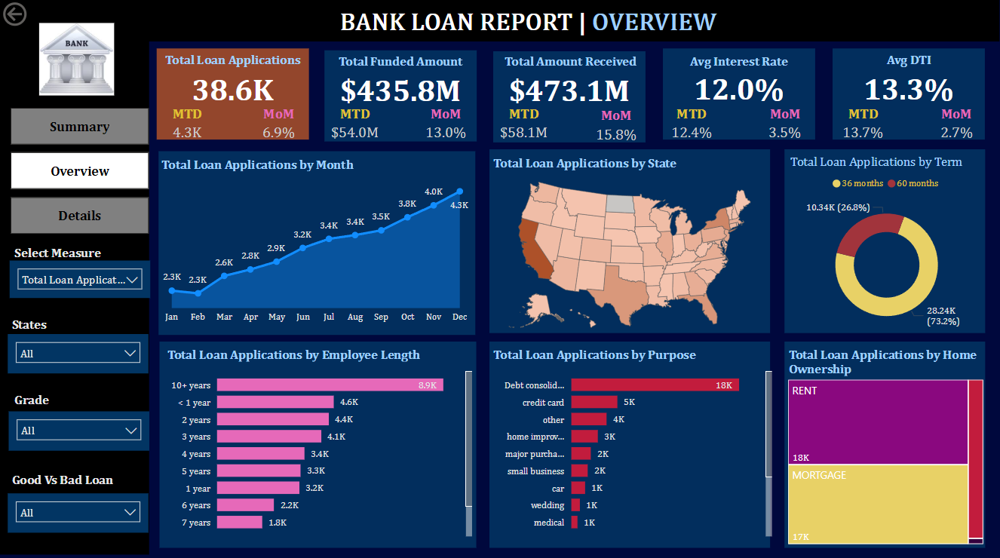

Transform Your Business
with Smart Dashboards
Founder of Data Vision
Sneha Narkhede
Welcome to my Portfolio
ABOUT ME 👩🏻‍💻
I am a recent B.Tech graduate in Computer Science and Engineering, specializing in Artificial Intelligence and Machine Learning, with an Honor in Data Science from GH Raisoni College of Engineering and Management, Pune.As a certified Data Scientist (IABAC), I have strong expertise in Python, SQL, Machine Learning, Power BI, Tableau, and Data Visualization. I’m passionate about uncovering patterns in data and delivering insights that help businesses solve problems and grow.
I’m currently building my own venture focused on creating custom dashboards that empower companies to monitor key metrics, track performance, and make informed decisions.
🯠My mission is to help businesses turn data into clarity — through simple, impactful dashboards that drive real results. I believe in continuous learning, meaningful collaboration, and delivering practical, value-driven solutions that make a measurable impact.
Education 📖
-
📠G. H. Raisoni College of Engineering and Management,
Pune
Bachelor of Technology (B.Tech) in Computer Science and Engineering (Artifical Intelligence & Machine Learning) with honor in Data Science
Year: 2021 - 2025
Score: 9.09 CGPA
CERTIFICATES 📜

Skills 🎯
- ⚙️ Core Expertise: Designing smart, interactive dashboards that help businesses track KPIs, monitor performance, and make confident data-driven decisions.
- ğŸ› ï¸ Tools & Technologies: Power BI, Tableau, Python (pandas, NumPy, Scikit-learn), SQL, Advanced Excel, Google Sheets
- 💻 Technical Skills: Data Cleaning & Transformation, Data Modeling, Business Intelligence Reporting, Data Visualization, Automation with Python, Dashboard Optimization
- 🤠Professional Skills: Client Requirement Gathering & Analysis, Customized Reporting, Time Management, Effective Communication & Presentation, Creative Problem Solving — with a focus on delivering measurable value.
- 🗣️ Languages: English , Hindi , Marathi
💼 PROJECTS 🏗️
💰 Bank Loan Analysis Dashboard
🔗Link to RepoTechnologies used:SQL Server, Power BI
Developed a comprehensive, interactive dashboard to analyze key loan metrics such as applications, funded amounts, interest rates, DTI ratios, and repayment statuses.
Data was loaded from CSV into SQL Server, cleaned and structured using SQL queries, then visualized in Power BI using bar charts, maps, tree maps, and line charts.
The dashboard includes a detailed loan status overview and a “Good vs. Bad Loan” classification model to support more informed loan portfolio decisions and enhance financial performance.
âš ï¸ğŸš‘ Road Accident Analytics Dashboard
🔗Link to RepoTechnologies used:Microsoft Excel
Designed a data-driven dashboard to analyze road accident data for the years 2021 and 2022. This Excel dashboard highlights patterns in accident frequency, locations, severity levels, and contributing factors using dynamic charts and visual filters.
Built to support transportation authorities and safety organizations in making proactive, data-informed decisions to reduce accident rates and improve public road safety.
📊 TATA Data Visualization – Empowering Business with Insights
🔗Link to RepoTechnologies used:Power BI, Excel
Worked on a business case project simulating a real-world data visualization challenge for TATA Group. Processed business data and built dashboards that provide clear insights into performance metrics, helping stakeholders monitor trends and make strategic decisions.
Focused on clean design, executive reporting, and actionable visuals tailored to support enterprise-level data analysis and operational improvement.
📷 Dashboard References

Bank Loan Report Overview Dashboard